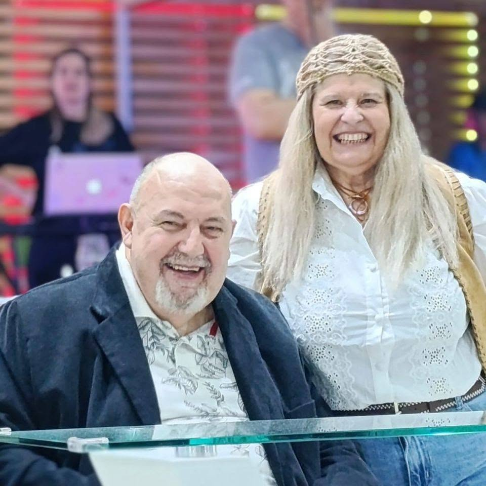

Predicamos el Evangelio para ganar personas para Jesucristo y formamos discípulos que lleven su mensaje a nuestra ciudad, a la nación y al mundo entero.
Viernes22:00 hsReunión de jóvenesSábado14:30 a 16:20 hsCélula de niñosDomingo19:00 hsReunión general

Quiénes somos
Apóstoles Gabriel Perochena y Marcela Lapontge
Establecido en la Patagonia desde 1999, el Centro Familiar Cristiano para las Naciones es un lugar donde cada persona puede conocer a Jesús, crecer en su fe y descubrir su propósito. Creemos en una iglesia viva, cercana y que camina junto a cada familia.
Nuestra visión es alcanzar a cada familia de Pico Truncado y de las naciones con el mensaje de esperanza del Evangelio, formar discípulos y servir con amor.
Dónde estamos
Una familia para las naciones
Desde Pico Truncado, el Centro Familiar Cristiano para las Naciones se extiende por distintas provincias de Argentina y más allá de nuestras fronteras.